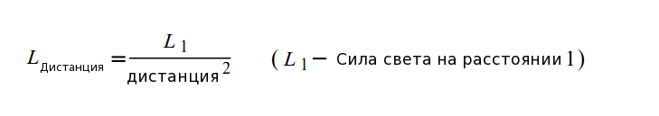

Урок 20 - Точечный источник света
Мы изучили 3 основные модели освещения (фоновую, рассеянную и отраженную), представляющие направленный свет. Это такой свет, который характеризуется направлением, но у него отсутствует какая-либо позиция. Поэтому он не ослабевает на расстоянии (на самом деле вы и не можете найти расстояние от источника этого вида света до объекта). Теперь мы собираемся рассмотреть точечный источник света, который имеет и позицию и эффект ослабевания при удалении от объекта. Классический пример точечного света - лампочка. Вы не замечаете эффекта ослабевания, когда она светит внутри небольшой комнаты, но если вынести ее на улицу, то будет сразу видна ограниченность дистанции, на которой она светит. Заметим, что направление света, которое постоянно для направленного света, будет динамическим для точечного. Это происходит из-за того, что точечный свет освещает равномерно во всех направлениях, поэтому направление должно быть подсчитано для каждого объекта через взятие вектора от него до позиции точечного источника. Вот почему мы указываем позицию, а не направление для точечного света.
Эффект ослабевания точечного света обычно называют "затуханием" (attenuation). Ослабление реального света подчиняется закону обратных квадратов, который говорит о том, что сила света обратно пропорциональна квадрату расстояния от источника света. Это описано в математическом выражении в следующей формуле:

Эта формула не дает хороших результатов в 3D графике. Например, на маленьком расстоянии сила света стремится в бесконечность. К тому же, у разработчика нет управления результатом кроме как задания начальной силы. Это слишком ограниченно. Поэтому мы добавим несколько коэффициентов в формулу, что бы сделать ее более гибкой:

Мы добавили 3 коэффициента затухания света в знаменатель. Постоянный, линейный и показательный коэффициенты. Физическая формула достигается при установлении постоянных и линейных множителей в 0, а экспоненциальный множитель в 1. Возможно вам это покажется удобным, если вы установите постоянный коэффициент в 1, а 2 других - как можно ближе к 0. Когда вы устанавливаете постоянный коэффициент равным 1, то в целом вы гарантируете, что сила света достигнет максимума на расстоянии 0 и будет убывать при увеличении расстояния из-за возрастания знаменателя. Когда вы точно настроите линейный и экспоненциальный множители, вы достигнете желаемого эффекта света, который может быстро или медленно затухать с расстоянием.
Давайте составим план расчетов точечного света:
- Вычисляем фоновый свет аналогично ситуации с направленным.
- Находим направление света как вектор из пикселя (в мировом пространстве) в позицию источника света. Теперь вы можете вычислить рассеянный и отраженный свет так же как и в случае с направленным, но в качестве направления будет использоваться этот вектор.
- Находим расстояние от пикселя до источника света и используем его для получения итогового значения затухания.
- Суммируем все 3 значения света вместе и делим их на коэффициент затухания для получения конечного цвета пикселя.
Прямиком к коду!
lighting_technique.h:24
struct BaseLight
{
Vector3f Color;
float AmbientIntensity;
float DiffuseIntensity;
BaseLight()
{
Color = Vector3f(0.0f, 0.0f, 0.0f);
AmbientIntensity = 0.0f;
DiffuseIntensity = 0.0f;
}
};
.
.
.
struct PointLight : public BaseLight
{
Vector3f Position;
struct
{
float Constant;
float Linear;
float Exp;
} Attenuation;
PointLight()
{
Position = Vector3f(0.0f, 0.0f, 0.0f);
Attenuation.Constant = 1.0f;
Attenuation.Linear = 0.0f;
Attenuation.Exp = 0.0f;
}
}
Несмотря на различия, направленный и точечный свет по прежнему имеют много общего. Все это было перемещено в структуру BaseLight, которую наследуют оба типа света. Направленный свет добавляет еще и направление в свой класс, в то время как точечный добавил свою позицию (в мировых координатах) и три коэффициента затухания.
lighting_technique.h:81
void SetPointLights(unsigned int NumLights, const PointLight* pLights);
GLuint m_numPointLightsLocation;
В дополнении к реализации точечного источника, этот урок еще покажет и как использовать сразу несколько источников света. Мы допускаем, что может использоваться один источник направленного света (выступающий в роли солнца) и / или несколько точечных источников (лампочки в комнате, факелы в пещере и т.д.). Функция принимает массив структур PointLight и размер массива и обновляет соответствующие значения в шейдере.
lighting_technique.h:103
struct {
...
} m_dirLightLocation;
struct {
GLuint Color;
GLuint AmbientIntensity;
GLuint DiffuseIntensity;
GLuint Position;
struct
{
GLuint Constant;
GLuint Linear;
GLuint Exp;
} Atten;
} m_pointLightsLocation[MAX_POINT_LIGHTS];
Для поддержки нескольких источников света шейдер хранит массив структур аналогичных PointLight (только в GLSL). Есть основных способа обновить массив структур в шейдере:
- Вы можете получить адрес каждого поля структуры в массиве элементов (например, если массив из 5 элементов с 4 полями, то получим 20 uniform-адресов), и придется в каждый передавать значения по отдельности.
- Вы можете получить адреса полей только первого элемента в массиве и использовать функцию GL которая назначит массив переменных для каждого указанного поля атрибутов. Например, если первое поле вещественного типа и второе целочисленное, то вы можете задать все значения первого вещественного поля в одном вызове и для второго поля во втором.
Первый метод более расточителен с точки зрения количества uniform-адресов, которые вам потребуются, но он более гибок в использовании. Он позволяет обновить значение любой переменной во всем массиве просто получив ее адрес и не не требует преобразований данных как во втором способе.
Второму методу требуется меньше управления uniform-адресами, но если вы хотите обновить сразу несколько элементов, а вы получаете массив структур (как в SetPointLights()), то вам потребуется преобразовать их в структуру массивов, так как каждому uniform-адресу потребуется обновиться на массив переменных одного типа. Когда используете массив структур, то в нем разрыв в памяти между одинаковыми полями последовательных элементов, которые требуют перемещения их в отдельный массив. В этом уроке мы воспользуемся первым способом. Вам рекомендую попробовать оба и выбрать понравившийся.
MAX_POINT_LIGHTS - это константа, которая ограничивает максимальное количество точечных источников света, которые могут быть использованы и должны быть синхронизированы с их значениями в шейдере. Значение по умолчанию 3. При увеличении количества источников в вашем приложении у вас могут появиться проблемы с производительностью, которая ухудшается при увеличении количества источников света. Эта проблема может быть смягчена при использовании технологии под названием "отложенное затенение" (deferred shading), которая будет рассмотрена в будущем.
lighting_technique.cpp:93
vec4 CalcLightInternal(struct BaseLight Light, vec3 LightDirection, vec3 Normal)
{
vec4 AmbientColor = vec4(Light.Color, 1.0f) * Light.AmbientIntensity;
float DiffuseFactor = dot(Normal, -LightDirection);
vec4 DiffuseColor = vec4(0, 0, 0, 0);
vec4 SpecularColor = vec4(0, 0, 0, 0);
if (DiffuseFactor > 0) {
DiffuseColor = vec4(Light.Color, 1.0f) * Light.DiffuseIntensity * DiffuseFactor;
vec3 VertexToEye = normalize(gEyeWorldPos - WorldPos0);
vec3 LightReflect = normalize(reflect(LightDirection, Normal));
float SpecularFactor = dot(VertexToEye, LightReflect);
SpecularFactor = pow(SpecularFactor, gSpecularPower);
if (SpecularFactor > 0) {
SpecularColor = vec4(Light.Color, 1.0f) *
gMatSpecularIntensity * SpecularFactor;
}
}
return (AmbientColor + DiffuseColor + SpecularColor);
}
Это не будет сюрпризом, что мы вполне можем поделить большую часть кода на направленный и точечный свет. Часть алгоритма не изменилась. Разница в том, что коэффициент затухания требуется только для точечного источника света. К тому же направление света предоставляется приложением в случае направленного света, а в случае точечного источника вычисляться для каждого пикселя.
Функция выше инкапсулирует общую часть между 2 типами света. Структура BaseLight хранит интенсивность и цвет. LightDirection подается отдельно по причине выше. Вершинная нормаль так же предоставляется потому, что мы нормируем ее только при входе в фрагментный шейдер и используем во многих вызовах в этой функции.
lighting_technique.cpp:117
vec4 CalcDirectionalLight(vec3 Normal)
{
return CalcLightInternal(gDirectionalLight.Base, gDirectionalLight.Direction, Normal);
}
С помощью общей функции, функция для расчета направленного света просто становится оболочкой, принимая большую часть своих аргументов из глобальных переменных.
lighting_technique.cpp:122
vec4 CalcPointLight(int Index, vec3 Normal)
{
vec3 LightDirection = WorldPos0 - gPointLights[Index].Position;
float Distance = length(LightDirection);
LightDirection = normalize(LightDirection);
vec4 Color = CalcLightInternal(gPointLights[Index].Base, LightDirection, Normal);
float Attenuation = gPointLights[Index].Atten.Constant +
gPointLights[Index].Atten.Linear * Distance +
gPointLights[Index].Atten.Exp * Distance * Distance;
return Color / Attenuation;
}
Вычисления точечного источника света немного сложнее чем направленного. Эта функция будет подсчитана для каждого настроенного точечного источника света, поэтому она принимает индекс света в качестве и использует его в глобальном массиве. Она вычисляет вектор из источника света (поступает в мировом пространстве из приложения) в мировую позицию, полученную из вершинного шейдера. Расстояние из источника до пикселя находится через встроенную функцию length(). Когда дистанция найдена, мы нормируем вектор направления. Вспомним, что CalcLightInternal() ожидает уже нормированный вектор и в случае направленного света класс LightingTechnique берет заботу об этом на себя. Мы получаем обратно цвет из CalcInternalLight() и используем расстояние, которое нашли ранее, для вычисления затухания. Итоговый цвет точечного источника получается делением цвета, который только что получили, на затухание.
lighting_technique.cpp:136
void main()
{
vec3 Normal = normalize(Normal0);
vec4 TotalLight = CalcDirectionalLight(Normal);
for (int i = 0 ; i < gNumPointLights ; i++) {
TotalLight += CalcPointLight(i, Normal);
}
FragColor = texture2D(gSampler, TexCoord0.xy) * TotalLight;
}
Как только мы получили все инфраструктуры, фрагментный шейдер очень упрощается. Он нормирует нормаль вершины и затем скапливает результат всех типов света вместе. Результат умножается на сэмплер и используется в качестве итогового цвета пикселя.
lighting_technique.cpp:279
void LightingTechnique::SetPointLights(unsigned int NumLights, const PointLight* pLights)
{
glUniform1i(m_numPointLightsLocation, NumLights);
for (unsigned int i = 0 ; i < NumLights ; i++) {
glUniform3f(m_pointLightsLocation[i].Color, pLights[i].Color.x, pLights[i].Color.y, pLights[i].Color.z);
glUniform1f(m_pointLightsLocation[i].AmbientIntensity, pLights[i].AmbientIntensity);
glUniform1f(m_pointLightsLocation[i].DiffuseIntensity, pLights[i].DiffuseIntensity);
glUniform3f(m_pointLightsLocation[i].Position, pLights[i].Position.x, pLights[i].Position.y, pLights[i].Position.z);
glUniform1f(m_pointLightsLocation[i].Atten.Constant, pLights[i].Attenuation.Constant);
glUniform1f(m_pointLightsLocation[i].Atten.Linear, pLights[i].Attenuation.Linear);
glUniform1f(m_pointLightsLocation[i].Atten.Exp, pLights[i].Attenuation.Exp);
}
}
Эта функция обновляет шейдер с значениями точечных источников через перебор элементов массива и передачи каждого атрибута элемента одного за другим. В нашем списке методов передачи данных этот способ был первым.
Демо к уроку показывает 3 точечных источника, гоняющихся друг за другом. Одна координата полагается на косинус, а другая на синус. Площадка легко делается из 2 треугольников. Нормаль идет строго вверх. При некоторых положениях камеры может показаться, что источники света выходят за пределы площадки, но это не так. Попробуйте объяснить эту иллюзию.